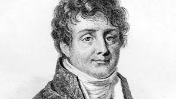

Datos Clave
| Dato | Valor |
|---|---|
| Área | Física / Cómputo |
| Unidad | Qubit |
| Tema central | QFT |
Aplicaciones
Criptografía : Algoritmo de Shor
Simulación : Moléculas y materiales
Búsqueda : Algoritmo de Grover
Optimización : Problemas combinatorios
La Transformada Cuántica de Fourier (QFT)
La Transformada Cuántica de Fourier (Quantum Fourier Transform, QFT) es el análogo cuántico de la Transformada Discreta de Fourier (DFT) clásica. Así como la DFT permite descomponer una señal en sus frecuencias, la QFT transforma la amplitud de un estado cuántico de la "base computacional" a la "base de frecuencias", pero aprovechando la superposición para hacerlo con muchos menos pasos que su versión clásica.
Su gran importancia radica en que es una pieza central de varios algoritmos cuánticos famosos, entre ellos el algoritmo de Shor (factorización de números enteros) y el algoritmo de estimación de fase, que a su vez es la base de muchos otros algoritmos cuánticos.
- Es el equivalente cuántico de la Transformada Discreta de Fourier (DFT).
- Se implementa usando puertas Hadamard y puertas de fase controladas.
- Un algoritmo clásico necesita O(N log N) operaciones (con la FFT); la QFT lo logra en O((log N)²) puertas cuánticas.
- Es un ingrediente clave del algoritmo de Shor y de la estimación de fase cuántica.
